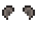

Casa en ruinas
| Casa en ruinas | |
 | |
| Horario de apertura: | Todo el día |
| Cerrado: | Nunca |
| Dirección: | Bosque Tizón |
| Residentes: | |
La Casa en ruinas (o también comúnmente llamada Casa Abandonada) es una casa situada al sur del Bosque Tizón. Un ratón se apodera del edificio y abre allí una tienda en la que vende sombreros al jugador en cuanto se consigue el primer logro. Todos los sombreros tienen un costo de  1000o.
1000o.
Los sombreros son puramente cosméticos. Aparecerá un nuevo sombrero en la tienda cada vez que se obtenga un logro. Los sombreros ganados en el Festival del huevo y el Festival del hielo también aparecerán en la tienda de sombreros, una vez que esté desbloqueada.
Carta
Se envía una carta por correo el día después de obtener el primer logro, que notifica al jugador que la tienda de sombreros está abierta. Sin embargo, la tienda de sombreros se puede visitar sin leer la carta.
| “ | “Hola. Yo vende sombreros. ¿Vale pock? Viene casa bieja bieja, pock. Traer munedas. -Ratón sombreril” |
Tienda
| Imagen | Nombre | Descripción del sombrero | Logro | Descripción del logro |
|---|---|---|---|---|

|
Gorra vieja | Una gorra antigua con la visera arrugada. Parece que ha vivido mucho. | Principiante | Obtén |

|
Lazo de la suerte | El centro está hecho de oro macizo. | Vaquero | Obtén |

|
Gorra molona | Está muy descolorida, pero solía ser azul intenso. | Terrateniente | Obtén |

|
Bombín | Hecho de fieltro suave. | Millonario | Obtén |
| Sombrero mexicano | Un sombrero de paja profusamente decorado. | Leyenda | Obtén | |

|
Casquete azul | Vuelve a una época más sencilla con este casquete de la pradera. | Tesoro Escondido | Dona 40 objetos diferentes al Museo. |

|
Sombrero de sheriff | El cuero está desgastado y agrietado, pero aún es flexible. Huele a humedad. | Una Colección Completa | Completa la colección del Museo. |

|
Lazo de mariposa | Es muy suave. | Una Nueva Amistad | Alcanza 5 corazones de amistad con alguien. |
|  | Orejas de ratón | Hechas con fibra sintética. | Mejores Amigos. | Alcanza 10 corazones de amistad con alguien. |

|
Orejas de gato | Bigotes incluidos. | Un Granjero Querido. | Alcanza 10 corazones de amistad con 8 personas. |

|
Tiara | Tiene una gran amatista engarzada en oro. | Colegas | Alcanza 5 corazones de amistad con 4 personas. |

|
Gorro de Santa | Celebra la temporada mágica. | Contactos | Alcanza 5 corazones de amistad con 10 personas. |

|
Orejeras | Mantén tus orejas calentitas. Forradas de terciopelo artesanal de Villa Castillo. | Popular | Alcanza 5 corazones de amistad con 20 personas. |

|
Lazo delicado | Si te fijas bien verás pequeñas joyas rosas que brillan. | Cocinero | Cocina 10 recetas diferentes. |

|
Gorro ciruela | No está mal. | Chef Ayudante | Cocina 25 recetas diferentes. |

|
Gorro de arquero | Es bonito, seas arquero o no. | Chef Gourmet | Cocina cada receta. |

|
Clip tropical | Tiene forma de palmera, pero en miniatura. | Mejorando | Mejora tu casa. |

|
Gorra de cazador | El forro de lana se mantiene caliente incluso en lo más profundo del bosque. | Viviendo A Lo Grande | Mejora tu casa al tamaño máximo. |

|
Margarita | Una margarita fresca y primaveral para tu pelo. | Bricolaje | Fabrica 15 objetos diferentes |

|
Gorra de camionero | Con rejilla en la parte trasera para mantener fresca la cabeza. | Artesano | Fabrica 30 objetos diferentes. |

|
Gorro de gnomo | Este gnomo era muy cabezón. | Maestro Artesano | Fabrica todos los objetos. |

|
Gorro de capitán | Su forma ayuda a los marinos a mantenerse secos en las tormentas. | Pescador | Atrapa 10 peces diferentes. |

|
Gorra formal | Pudo haber pertenecido a un policía o un cartero. Es muy suave y no huele mal. | Lobo de Mar | Atrapa 24 peces diferentes. |

|
Parche | No sabes si es real o de una tienda de disfraces. | Pescador Experto | Atrapa todos los peces. |

|
Diadema de sandía | Su patrón de colores está inspirado en la popular fruta veraniega. | La Madre De Las Capturas | Atrapa 100 peces. |

|
Lazo de lunares | Seguro que atraerás todas las miradas. | Recadero | Completa 10 misiones de "Necesito ayuda" |

|
Máscara de gallina | Seguro que con esto puesto haces sonreír a todos. | Una Gran Ayuda | Completa 40 misiones de "Necesito ayuda." |

|
Sombrero de vaquero | Para expertos en ganado. | Policultivo | Envía 15 unidades de cada cultivo. |

|
Sombrero de vaquera | La cinta está tachonada con diamantes falsos. | Monocultivo. | Envía 300 unidades de un cultivo. |

|
Máscara de trasgo | Asusta a los vecinos con esta máscara espeluznante. Con orejas puntiagudas para dar más realismo. | Envío Completo | Envía todos los objetos. |
 |
Gorro de chef | El tradicional gorro que lleva un jefe de cocina. | Chef Gourmet | Cocina cada receta. |

|
Sombrero de paja | Ligero y fresco, el sueño de todo granjero. | Gana la cacería de huevos en el Festival del huevo. | |

|
Gorra de marinero | Fresca y almidonada. | Gana la competencia de pesca en el Festival del Hielo. | |
 |
Turbante elegante | Un excelente turbante de seda negra con un borde dorado. | Obtén todos los Logros. | |
| Sombrero de Junimo | En honor a nuestros pequeños amigos. | Perfección | Llega a la cumbre. | |
| Sombrero de Papel | Hecho de un papel especial que no se desintegra bajo la lluvia. | Una orilla lejana | Llega a la Isla Jengibre. | |
| Gorro de botones | Por alguna razón, te hace querer vender periódicos. | Erudito | Leer todos los Libros. | |
| Gorro de Bufón | Muestra tu payaso interior. | Dos pulgares arriba | Ver una Película. | |
| Cinta Azul | Una adorable cinta que se coloca tras la cabeza | Lazo azul | Consigue el 1er puesto en la competición de la Feria de Stardew Valley. | |
| Sombrero del Gobernador | Una réplica icónica del sombrero del gobernador. | Una Sopa Inolvidable | Deleita al gobernador. | |
| Lazo Blanco | Un lazo tan blanco como la nieve | Buenos Vecinos | Ayuda a tus vecinos del bosque a que crezca su familia. | |
| Casco Espacial | Advertencia: Este casco no ha sido probado realmente en el espacio exterior. | Peligro En Las Profundidades | Alcanza el fondo de las minas peligrosas. | |
| Corona del Infinito | Hecho de un material exótico que nunca has visto antes | Poder Infinito | Obtener el arma más poderosa. |
Historial
- 1.4: Se agregaron sombreros ganados en festivales a las existencias en la tienda de sombreros.